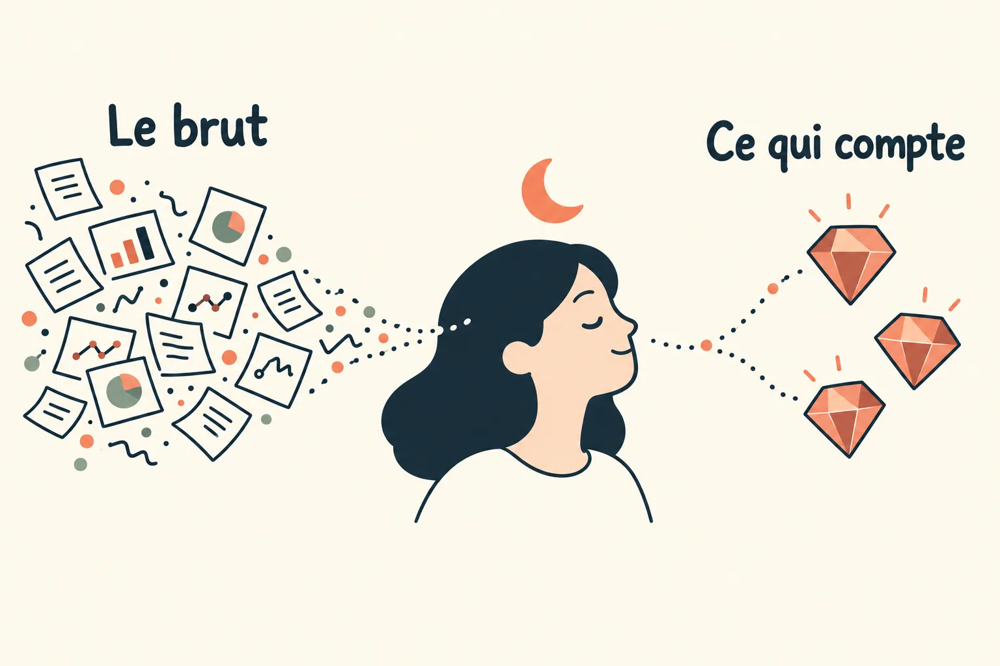
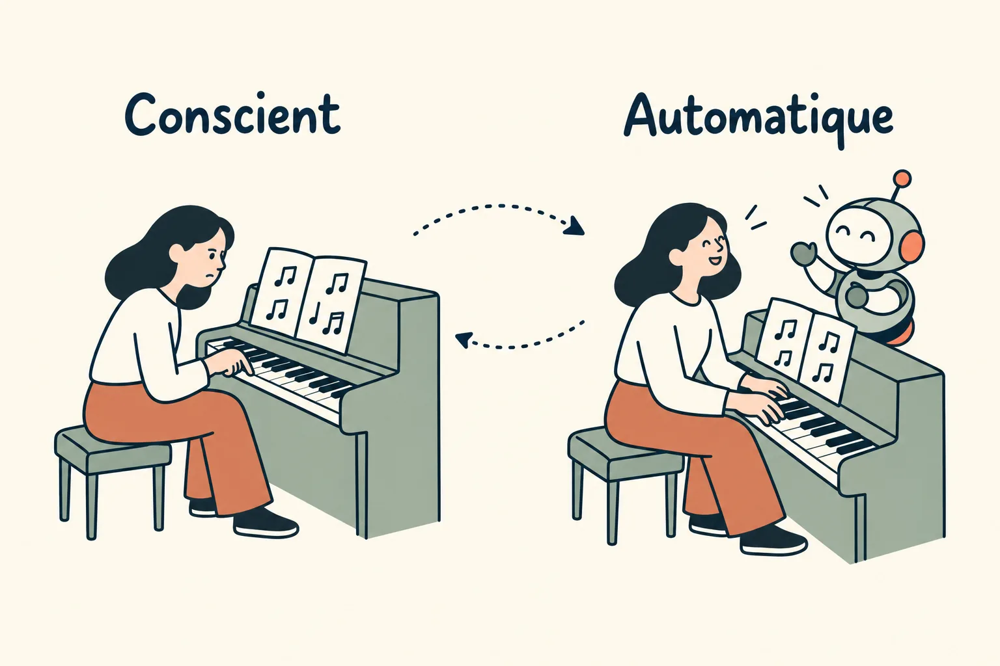
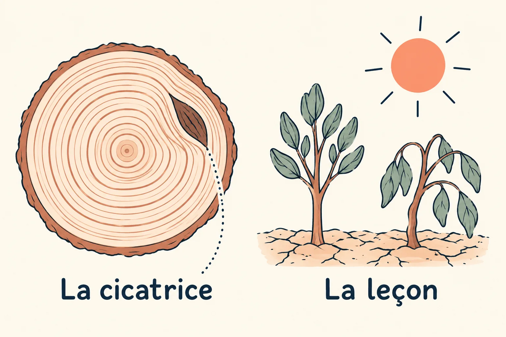
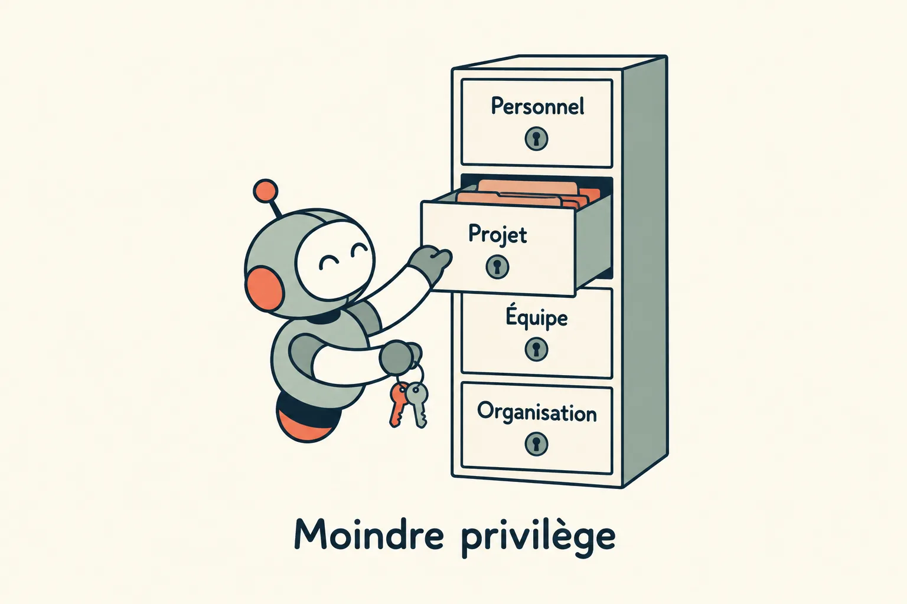
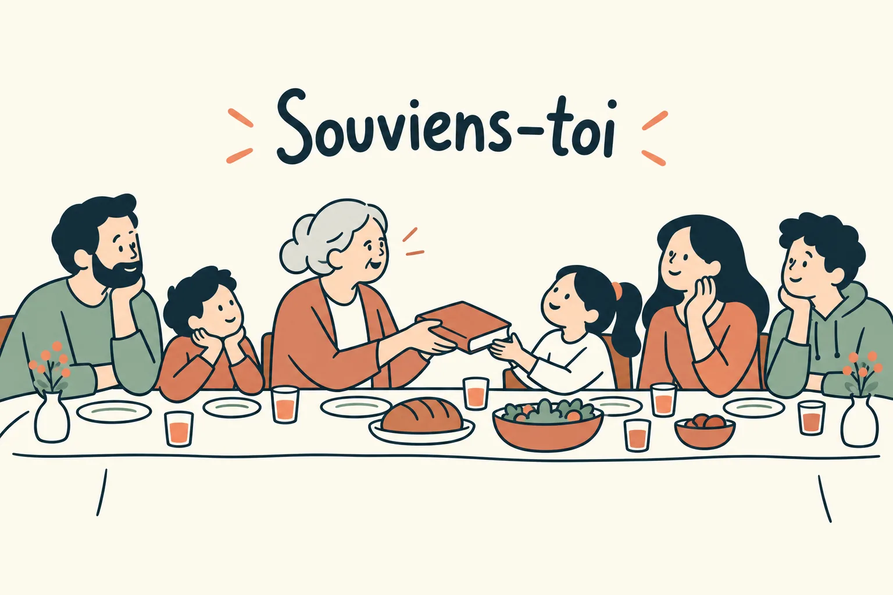

Une mémoire qui digère le brut
Un agent commence chaque session sans souvenir. Ce qu'il sait du projet, de l'équipe et de leurs erreurs passées, il faut le lui donner, et le lui donner en vrac le noie. Une mémoire fait ce tri : elle digère le brut, garde ce qui a de la valeur et laisse l'attention libre pour le reste. Elle est personnelle, et elle est aussi collective.
Du brut à la mémoire partagée
On y arrive en 5 étapes.
1. Le cerveau digère le brut
Le cerveau reçoit bien plus d'informations qu'il n'en garde. Il en encode d'énormes quantités, mais n'en stocke qu'une petite fraction sur la durée. Le tri se fait en grande partie pendant le sommeil : le cerveau y rejoue les souvenirs de la journée et les déplace vers le cortex, où ils rejoignent ce qu'il savait déjà (Diekelmann et Born, 2010). Et il ne garde pas n'importe quoi. Dans une expérience de 2011, le sommeil ne renforçait le souvenir d'une liste de mots que chez les participants qui savaient qu'on les interrogerait dessus : le cerveau consolide en priorité ce qui lui servira.
Cette digestion libère l'attention. Ce qui est rangé ne coûte presque plus d'effort (Intentions et compétences), et la mémoire de travail reste disponible pour les éléments qui ont le plus de valeur : ce qui est nouveau, ce qui demande une décision.

2. Du conscient à l'automatique, et retour
Le conscient et l'inconscient communiquent, et la mémoire est l'un de leurs ponts. Depuis les années 1980, les neurosciences distinguent 2 grandes familles de mémoire, comme le retrace le neuroscientifique Larry Squire : celle qu'on peut rappeler consciemment, les faits et les souvenirs, et celle qui agit sans passer par la conscience, les gestes appris, les habitudes. La pianiste qui déchiffre une partition note par note passe par la première. Des années plus tard, elle joue en parlant à quelqu'un : le morceau est passé dans la seconde. Le chemin inverse existe aussi. Une habitude qui échoue se remarque, redevient consciente, et peut être corrigée.
Une équipe fonctionne de la même façon. Une règle commence par se discuter, en revue ; une fois écrite dans un skill ou un garde-fou, elle s'applique sans qu'on y pense (Intentions et compétences). Quand elle échoue, elle remonte à la surface pour être revue.

3. Les arbres gardent la cicatrice et la leçon
Un arbre n'a pas de cerveau, et il se souvient quand même. Le pathologiste forestier Alex Shigo a décrit comment un arbre blessé cloisonne sa blessure : ses cellules forment des parois autour de la zone touchée pour freiner la pourriture, et le bois qui pousse ensuite enferme la cicatrice. Une coupe du tronc la montre encore, prise dans les cernes. Les plantes gardent aussi la leçon : une plante déjà exposée à un stress, une sécheresse ou une attaque, répond plus vite et plus fort la fois suivante. Les botanistes parlent d'empreinte de stress.
Une équipe a besoin des deux. La cicatrice, c'est l'incident consigné dans le journal ; la leçon, c'est la règle qui fait réagir plus vite la fois suivante (Pouls). C'est la même boucle que le sentier tracé par les passants, qu'on finit par paver (Intentions et compétences).

4. Un second brain, en moindre privilège
Ce que le sommeil fait pour le cerveau, un second brain le fait pour le contexte : des notes tenues hors de la tête, qui digèrent le contexte personnel, celui d'un projet, d'une équipe, d'une organisation. L'expression a été popularisée par Tiago Forte dans Building a Second Brain. Pour un agent, qui ne garde rien d'une session à l'autre, c'est la seule mémoire possible : il ne sait que ce qu'on lui fait relire.
Tout le contexte n'est pas à donner à tout le monde. On applique à la mémoire le principe du moindre privilège, posé par Jerome Saltzer et Michael Schroeder en 1975 pour la sécurité informatique : chacun n'accède qu'à ce dont sa tâche a besoin. Une session sur un projet lit la mémoire de ce projet, pas celle des autres, et des notes personnelles restent personnelles. Moins de contexte, c'est aussi moins à relire, et un agent qui reste sur ce qui compte.

Nos notes vivent sur 3 étages. Personnel, hors du dépôt : un journal des irritants partagé par toutes les sessions d'un développeur, des notes de contexte, et la mémoire de Claude Code, rangée par projet, avec un fichier par fait et un index d'une ligne par fait relu au début de chaque session. Équipe, dans le dépôt : les fichiers d'instructions et les skills. Organisation : Odette, notre outil de pilotage, avec ses features et ses tâches. Une règle interdit de recopier les notes personnelles dans une PR, un message ou une page partagée.
5. Une mémoire collective
La mémoire n'est pas seulement personnelle. Le sociologue Maurice Halbwachs l'a montré dès 1925 dans Les Cadres sociaux de la mémoire : chacun se souvient à l'intérieur des cadres de son groupe, et le groupe garde une mémoire collective, faite aussi d'événements que ses membres n'ont pas vécus mais qui leur ont été transmis.
Les communautés juives en donnent un exemple qui traverse les siècles. Zakhor, « souviens-toi », est un commandement répété dans la Bible hébraïque. Dans Zakhor (1982), l'historien Yosef Hayim Yerushalmi montre que cette mémoire s'est longtemps transmise par le rite, la liturgie et le récit plutôt que par les livres d'histoire. Chaque année, le récit de la Pâque juive demande à chacun de se voir comme s'il était lui-même sorti d'Égypte : le passé est raconté à nouveau, à la même table, d'une génération à l'autre.
Une équipe entretient sa mémoire de la même façon : en racontant ses incidents, ses décisions et leurs raisons, à des moments fixés, dans des lieux où chacun les retrouve. Ce qui n'est raconté qu'une fois s'oublie.

Ce dossier en est une forme : une routine le met à jour chaque semaine à partir de ce qui a été réellement livré. Et le fil Slack où naît une demande en garde l'histoire, de la question au déploiement (Humain sur la boucle).
Une mémoire d'équipe digère chaque jour les fils Slack et les tâches d'Odette : un résumé par fil ou par tâche, les décisions repérées, les tâches et les fichiers cités, et les noms de clients remplacés par « un client ». Au démarrage d'une session sur la branche d'une tâche, un hook en injecte environ 1 500 caractères au plus : les tâches voisines, les PR ouvertes qui touchent les mêmes fichiers, et les décisions des 30 derniers jours sur ce que la branche modifie. Une source qui ne répond pas est sautée, sans bloquer la session.
À essayer chez vous
- Ne donnez pas le brut à l'agent : faites-le digérer, et gardez ce qui servira.
- Faites passer les règles du conscient à l'automatique, dans un skill ou un garde-fou, et laissez-les remonter quand elles échouent.
- Gardez la cicatrice et la leçon : l'incident consigné, et la règle qui fait réagir plus vite.
- Rangez le contexte par étage, personnel, projet, équipe, organisation, et ne donnez à chaque session que celui dont elle a besoin.
- Entretenez la mémoire collective en la racontant, à des moments fixés.